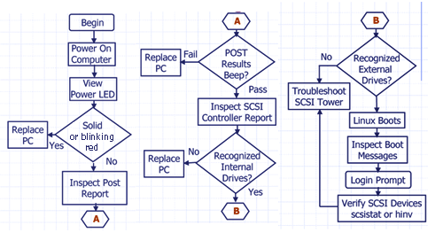

Operating Documentation
Direction 5193574-800, Rev# 22
LightSpeed 7.X Service Methods
Module Version 3.0, Version Date 8/23/07
Operating Documentation |
| Last Revised: | 23 August 2007 |
| NOTE: | For the latest HP Troubleshooting information, please go to http://www.hp.com/ to review the HP Workstation xw8200 Service and Technical Reference Guide. |
The Power LED on the Power On/Off button has the following states:
Solid Green: System on
Blinking Green: Stand By
Solid or Blinking Red: System Error
None: Hibernate Mode or Off
The hard disk drive activity LED flickers whenever the system is accessing either hard drive.
The network activity LED at the rear of the system on the onboard network port flickers whenever there is network activity (as long as the system is plugged into AC power with power switch on or off).
The beeps are heard through the on-board piezo speaker and not the chassis speaker. The blinking lights and beeps repeat for five cycles. After that, only the blinking lights repeat.
Table 1 shows the Beep Component Error Solutions.
Table 1: Diagnostic Light Codes
| Power LED and Sound Activity | Diagnosis and Service Action | |
|---|---|---|
| None | System does not power on:
| |
| Blinks RED 2 times, once per second, then 2 second pause, 2 beeps | Thermal Shutdown:
| |
| Blinks RED 3 times, once per second, then 2 second pause, 3 beeps | CPU not installed: Cycle power. If problem persists, replace the FRU. | |
| Blinks RED 4 times, once per second, then 2 second pause, 4 beeps | Power supply failure: Replace the FRU. | |
| Blinks RED 5 times, once per second, then 2 second pause, 5 beeps | Pre-video memory error: Cycle power. If problem persists, replace the FRU. | |
| Blinks RED 6 times, once per second, then 2 second pause, 6 beeps | Pre-video graphics card error: Cycle power. If problem persists, replace the FRU. | |
| Blinks RED 7 times, once per second, then 2 second pause, 7 beeps | System board failure (ROM detected failure before video): Cycle power. If problem persists, replace the FRU. | |
| Blinks RED 8 times, once per second, then 2 second pause, 8 beeps | Invalid ROM based on bad checksum: Cycle power. If problem persists, replace the FRU. | |
| Blinks RED 9 times, once per second, then 2 second pause, 9 beeps | System powers on but is unable to boot: Cycle power. If problem persists, replace the FRU. |
POST is a series of diagnostic tests that runs automatically when the system is turned on. An audible and/or visual message occurs if the POST encounters a problem. POST checks the following items to ensure that the workstation system is functioning properly:
Keyboard
Memory modules
Diskette drives
All SATA, IDE. and SCSI mass storage devices
Processors
Controllers
Table 2: POST Error Messages
| Screen Message | Probable Cause | Recommended Action |
|---|---|---|
| 101 - Option ROM Error | System ROM checksum. | Verify the correct ROM. Flash the ROM if needed. |
| 301 - Keyboard Error | Keyboard failure. |
|
| 303 - Keyboard Controller Error | I/O board keyboard controller. | Reconnect keyboard with workstation turned off. |
| 304 - Keyboard or System Unit Error | Keyboard failure. |
|
| 501 - Display Adapter Failure | Graphics display controller. | Verify that the monitor is attached and turned on. |
| 510 - Splash Screen image corrupted | Splash Screen image has errors. | Install latest version of ROMPaq to restore image. |
| 601 - Diskette Controller Error | Diskette controller circuitry or diskette drive circuitry incorrect. |
|
| 605 - Diskette Drive Type Error | Mismatch in drive type. | Run Computer Setup (F10 Setup). |
| 611 - Primary Diskette Port Address Assignment Conflict | Configuration error. | Run Computer Setup (F10 Setup). |
| 912 - Computer Cover Has Been Removed Since Last System Start Up | No action required. | |
| 940 - Extended ROM signature not found | The signature at the start of the ROM flash is missing. Your firmware (BIOS) is incomplete. | Run ROMPaq again. |
| 960 - CPU Overtemp occurred | The ambient temperature could exceed operating limits (maximum=95°F), or there are obstructions to airflow, including dust build up. |
|
LED indications
Reports
Replace PC
SCSI tower parts
Replace faulty drive
Illustration 1: POST

Power switch LED flashes.
PC may beep multiple times.
Report display -
Detailed text with instructions to proceed using function keys.
Detailed error codes or instructions for decoding “beeps”.
If power-up self tests fail, replace the computer.
Follow instructions displayed in report.
Read the summary for controller and drive status.
HINV lists internal drives found.
SCSISTAT lists scan tower devices.
Watch for boot text messages that do not contain [OK] indications.
If your display is blank after you turn on your Workstation, check that:
The Workstation and monitor are turned on. (The power lights should be illuminated.)
Both the Workstation and monitor power cords are firmly connected and plugged in.
The outlet power is functioning.
The monitor is firmly connected to the graphics card connection.
The monitor’s contrast and brightness settings are set correctly.
The Power-on-Self-Test (POST) can detect both an error and a change to the configuration. In either case, a code and short description is displayed. Depending on the message, one or more choices are displayed:
Press <F1> to ignore the message and continue.
Press <F2> to run the Setup program and correct a system configuration error.
Press <Enter> to see more details about the message. After viewing these details, you are returned to the original POST display screen.
If your keyboard does not work as expected:
Ensure that all the keyboard cables are firmly connected.
Ensure the keyboard is connected to the keyboard connector rather than the mouse connector on the rear panel of the Workstation.
Ensure you are using a PS2 keyboard rather than a USB keyboard.
Replace the keyboard with a known working unit to ensure the keyboard itself is not defective.
If the display is blank, refer to Section 2.1.1, “Display is Blank”.
If the display works properly during the Power-on-Self-Test (POST), but goes blank when Windows starts, the display settings in the operating system may not be compatible with your monitor.
If your mouse does not work as expected:
Ensure that the mouse cable is firmly connected.
Ensure that the mouse is connected to the mouse connector rather than the keyboard connector on the rear panel of your Workstation.
Ensure you are using the correct driver. You can download the latest driver from the HP web site (www.hp.com/workstations/support).
Clean the mouse ball with a dry, lint-free cloth if the cursor moves sporadically.
Replace the mouse with a known working unit to ensure the mouse itself is not defective.
| NOTE: | Run e-Diag Tools before contacting the OLC for Help. e-Diag Tools gives you information your OLC engineer needs. |
Use e-Diag Tools to diagnose hardware-related problems on your HP Workstation.